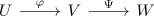

transformationsformel für das lebesgue maß
Proposition
Seien $U,V \subseteq \mathbb{R}^d$ offen und sei $\varphi: U \rightarrow V$ ein $C^1$ Diffeomorphismus. Dann gilt für $A \subseteq U$ und $A \in \mathcal{B}^d$ auch
wobei $D_{\varphi}$ die Jacobi Matrix ist.
Proof
Ein Drama in 6 Akten
Akt 1 - Reduktion auf Lokale
Aussage
Es gilt, dass
äquivalent ist zu: für alle $y \in U$ existiert eine offene Umgebung $U_y \subseteq U$ und
für $A' \subseteq U_y, A' \in \mathcal{B}^d$
Beweis
1) $\Rightarrow$ 2)
gilt, da von einer globalen Aussage auf eine lokale spezifiziert wird (= Spezialfall)
2) $\Rightarrow$ 1)
Über Lands self indexing trick wähle man eine offene Überdeckung. Nach open euclidean set covered by a countable subcover erhält man $U_{y_i}$
nach disjointification of countably many subsets erhält man abzählbar viele, disjunkte messbare Teilmengen
Sei $A \in \mathcal{B}^d$ mit $A \subseteq U$. Dann sind $\varphi(A \cap B_j)_{j \in \mathbb{N}}$ paarweise disjunkt, da $B_j$ paarweise disjunkt sind und $\varphi$ injektiv ist. (cf. Bild einer Injektion und disjunkte Vereinigung)
Damit folgt
wobei hier die sigma-Additivität einfließt
Nach Annahme gilt $\lambda^d( \varphi(A \cap B_j)) = \int_{\mathbb{R}^d} \vert \mathrm{det}(D(\varphi)(x)) \vert \chi_{A \cap B_j}(x) \mathrm{d} x$ bzw.
Nach Monotone Konvergenz nach Beppo Levi folgt
und wegen $\sum_{j=1}^\infty \chi_{A \cap B_j}(x) \mathrm{d} = \chi_{\coprod (A \cap B_j)}}(x)$ folgt auch
Akt 2 - Komposition von Diffeos
Aussage
Seien

$C^1$ diffeos, so dass die Transformationsformel für beide gelte.
Dann gilt die Transformationsformel auch für die komposition $\Psi \circ \varphi$
Beweise
Nach der Transformationsformel für das Lebesgue Integral dürfen wir annehmen
Nach der Multiplikativität der Determinante / Kettenregel für das totale Differential gilt
Akt 3 - Permutations
Sei
Dann gilt aufgrund der <> und
bzw.
Akt 4 -
Akt 5 - Induktionsanfang
Sei $[a,b[ \subseteq U$ ein Intervall für $a \leq b$. Dann gilt die Transformationsformel wegen Erster Hauptsatz der Differential- und Integralrechnung / Zweiter Hauptsatz der Differential- und Integralrechnung Denn
wobei $\varphi$ nicht das vorzeichen wechselt, da $\varphi'$ stetig und ungleich $0$ ist.
Damit gilt die Transformationsformationsformel auf $I \cap U$, bzw. einem schnittstabilen Erzeuger von $\mathcal{B} \cap U$.
Akt 6 - Induktionsschritt
Aussage
sei $d \in \mathbb{N} \setminus \{1\}$ Angenommen die <> gilt für $d - 1$, so ist zu zeigen, dass die Aussage auch für $d$ gilt